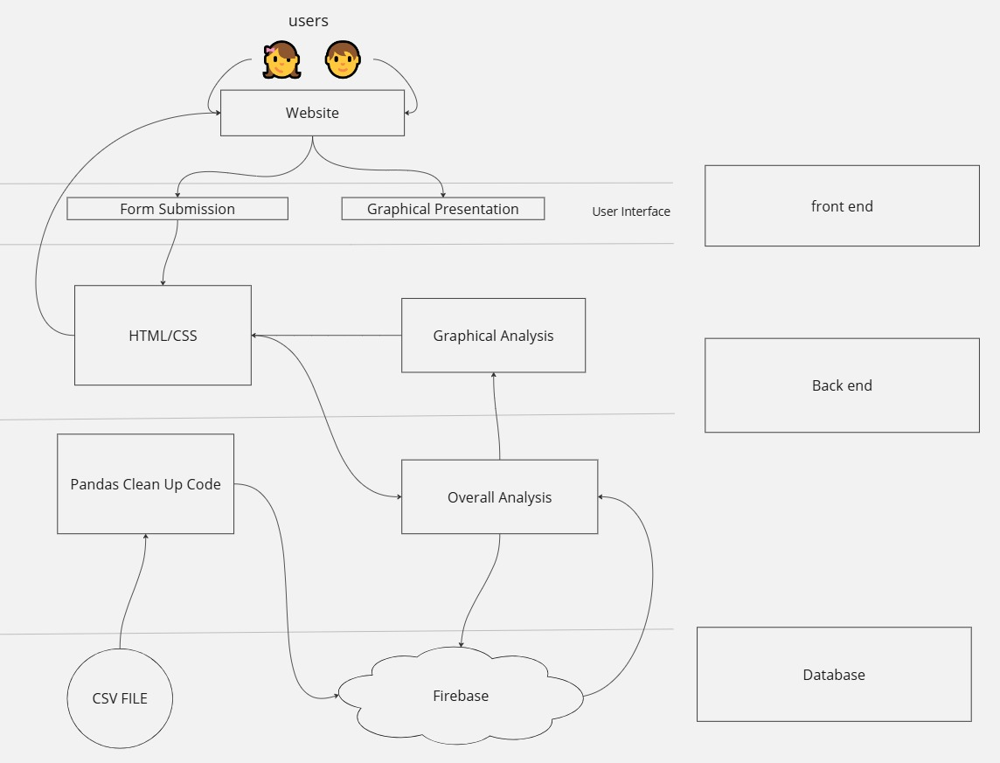
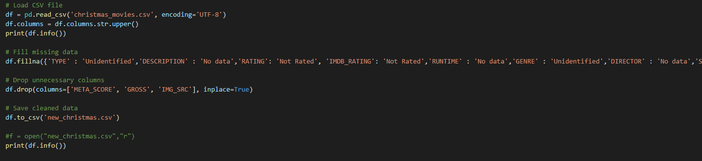
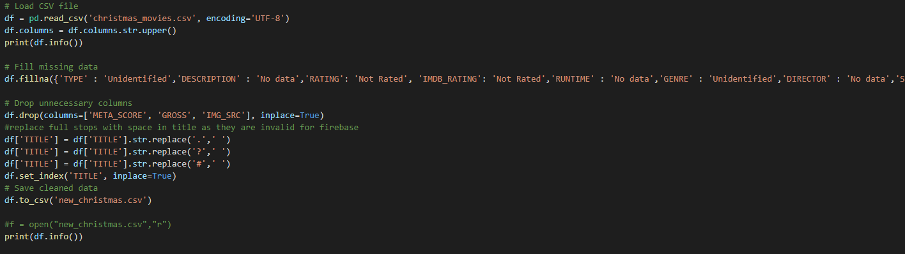

After thorough research of websites containing given datasets, I found “ https://www.kaggle.com/datasets “ gave the most intricate topics for me to analyse in my information system. I researched multiple topics and eventually found one that interested me most, all things movies. I narrowed it down to “Christmas Movies”, https://www.kaggle.com/datasets/jonbown/christmas-movies , a dataset based on IMDb ratings. I found that the official IMDb website didn't offer a specific category for Christmas Movie lovers, and it was very hard to narrow movies down. Before starting my project, I carried out research into existing interactive information systems and explored data related to Christmas movies to help me understand how to present my data effectively. This research gave me ideas on how to display data through charts and filters, and how to make my project more interactive for users.
Research into Existing Interactive Information Systems
To get ideas for my project, I researched several websites that display information about movies, including Christmas movies, using charts, ratings, and user interaction. These websites were easy to find through Google searches and helped me understand how movie data is typically presented.
IMDb (Internet Movie Database) - IMDb is one of the most popular websites for movie information, I found this most interesting as my database that I ended up choosing is from their ratings and data. (Link)
Rotten Tomatoes - Rotten Tomatoes displays critic and audience scores for movies, including lists like "Best Christmas Movies." It combines ratings with reviews and interactive filtering options, which inspired my idea to allow users to filter movies by rating. (Link)
Pinterest - Pinterest is a visual discovery platform where users create and browse collections (called boards) on all kinds of topics, including Christmas movies. By searching "Best Christmas Movies," I found lots of user-generated lists and recommendations. (Link)
Research into Christmas Movie Data
I chose Christmas movies as the focus of my project because they are popular every year and people love discovering new festive films. To find my data, I used a publicly available dataset from Kaggle. This dataset included:
Movie titles
Release years
IMDB ratings
Number of user votes
This variety of data gave me the chance to create bar charts, pie charts, and other visualisations showing ratings or which movies were most popular.
Comparing My Project to Existing Systems
My project is similar to IMDB because it uses charts and filters to display movie data. However, my project focuses specifically on Christmas movies, making it more tailored to the festive season.
In addition, my project adds a personal element by allowing users to submit their own opinions through a survey. This survey data is then used to generate fun facts and insights, which is something I didn't see in the other systems I researched.
Combining official data with user feedback makes my project more interactive and personal for users.
3. Plan & Design
Overview
This section outlines how I planned and designed my interactive information system. The goal was to create a
website that allows users to explore a dataset of Christmas movies through visualisations, filters, and interactive features.
The design was guided by the requirements set out in the project brief, ensuring both basic and advanced requirements were addressed.

Technologies Used
The following technologies were selected to develop my project:
Python: Used to extract, clean, and process the dataset. Python was also used to generate initial visualisations and summary statistics.
HTML & CSS: Used to create the website structure and style the user interface, ensuring it is visually appealing and easy to navigate.
JavaScript: Used to add interactivity, such as filtering movies, updating charts, and processing user survey responses.
Chart.js: Used to generate dynamic, interactive charts, including bar charts and pie charts that update based on user input.
Firebase: Used to collect and store user survey responses in real-time, allowing me to generate insights from user feedback.
Design Goals
Ensure the interface is easy to use with clear navigation and layout.
Allow users to view data through interactive charts and filters.
Enable users to contribute their opinions through a survey, with responses saved for analysis.
Ensure the website is fully responsive, working on both desktop and mobile devices.
Flowchart Diagram
The flowchart below illustrates how users will interact with the system:
Page Structure
The website will be divided into the following key sections:
Home Page: Introduction to the project and navigation to different sections.
Interactive Charts: Bar and pie charts showing movie ratings, votes, and other key insights.
Survey: A user feedback form asking about favourite Christmas movies and snacks.
Charts On Top 10: Images of movies filtered by top 10 rating.
Evaluation: Reflection on the project’s success and areas for improvement.
Considerations
Ensuring data is cleaned thoroughly to avoid errors in charts.
Providing clear instructions for users so they understand how to interact with the website.
Testing all features on multiple devices to ensure consistent performance.
4. Create
This section outlines my development process of the project, with weekly progress, and key challenges encountered.
12-Week Process Log
Week
What I Did
Week 1
Picked my dataset (Christmas Movies), looked through the data to see what I could use, and started cleaning it using Python (removing blank rows and fixing errors).
Week 2
Created my Firebase project and real-time database to store survey results later on. Tested connecting to Firebase.
Week 3
Planned my website layout - decided on sections like charts, survey, and filtered lists. Made a basic HTML file and some placeholder sections.
Week 4
Started creating my graphs using Python (like bar chart for ratings and pie chart for genres) and saved them as images.
Week 5
Created style.css to design my website - added Christmas colours, styled buttons, and section layouts.
Week 6
Added a survey form to the website asking people about their favourite Christmas movies and snacks.
Week 7
Connected the survey to my Firebase database, so every response was saved in real-time. Tested with a few fake responses.
Week 8
Realised I left out some important things, like movie filtering and some labels on charts. Went back to add these and make sure users could filter movies by rating.
Week 9
Added interactive charts using Chart.js to replace some images. These charts update when users filter movies.
Week 10
Wrote most of my report (Meeting the Brief, Investigation, Plan & Design). Made small changes to the website to match what I wrote in the report.
Week 11
Did a full test of the whole site - checked all buttons, made sure survey saves to Firebase, checked all sections show up correctly.
Week 12
Packed everything into the correct folder structure (Report and Artefact folders), made sure index.html opens the full report, and double-checked all files work for submission.
My Challenge Encountered
Issue:When loading the dataset into firebase and trying to generate some basic charts and calculations I identified that some rows had symbols that were invalid for firebase. These incorrect symbols were causing errors in my code and failed to have my cleaned data sent to firebase.

Resolution:...

Testing Log
During development, several key functionalities were tested. Below is an example of my test case log.
Test Case
Expected Outcome
Actual Outcome
Result
Dataset Loading
Dataset should load correctly into Python and display basic stats.
Dataset loaded successfully and displayed correct movie counts and ratings.
Pass
Chart Display
Charts should show correct data for ratings and genres.
Bar chart, pie chart, and top 10 charts displayed correctly with accurate data.
Pass
Survey Data Saved to Firebase
Survey responses should save correctly to the Firebase database.
Responses successfully saved and retrieved from Firebase.
Pass
Filter by Rating
Movie list and charts should update when a rating filter is applied.
Filtered movies displayed correctly, and charts updated to show only matching movies.
Pass
Navigation Between Sections
Clicking on the navbar buttons should show the correct section.
All buttons correctly displayed their matching section.
Pass
Algorithm Description
The core algorithm in my project processes the Christmas movies dataset to:
Count how many movies were released each year.
Group movies by their rating and display them in interactive charts.
Allow filtering of movies by rating using the chart and dropdown filter.
Retrieve survey responses from Firebase and calculate summary statistics (like the most popular snack and average number of movies watched per year).
Movie Data Processing Algorithm
In Python, I used the dataset to count how many movies were released in each year and grouped the movies into different rating categories. This data was saved into JSON format so the website could use it to display charts.
# Example Python logic
movie_count_by_year = {}
rating_distribution = {}
for movie in dataset:
year = movie['release_year']
rating = movie['rating']
if year not in movie_count_by_year:
movie_count_by_year[year] = 0
movie_count_by_year[year] += 1
if rating not in rating_distribution:
rating_distribution[rating] = 0
rating_distribution[rating] += 1
Filtering Algorithm (JavaScript)
In my website, when the user selects a rating from the dropdown or clicks on the pie chart, the following algorithm filters the movies and updates the charts.
Overall, I am happy with how my Christmas Movies project turned out. The project successfully meets the requirements set out in the brief by combining data analysis, visualisation, and interactivity. The website allows users to explore movie data through charts, filter movies by rating, and even submit their own preferences through a survey.
One of the strongest aspects of the project is the use of interactive charts, which update automatically when the user applies filters. This makes it easier for users to engage with the data and spot trends, such as the most highly rated movies or which ratings are most common.
The project also meets the basic requirements by:
Extracting, cleaning, and processing data using Python.
Creating visualisations to display key aspects of the data.
Developing a web interface where the public can view and interact with the data.
Some of the advanced requirements were also achieved, including:
Adding interactive features to charts (filtering and hover effects).
Creating a survey form that collects and stores user feedback in Firebase.
Using the survey data to generate user-based insights.
Areas for Improvement
Although the project works well, there are several areas I could improve if I had more time:
Add more advanced filtering options, such as filtering by for example decade.
Improve the visual design to make the site look more polished and professional.
Expand the analysis by adding trend lines or additional comparisons, such as comparing Christmas movies to non-Christmas movies.
Include a section that highlights top user-recommended movies based on the survey data.
Overall, the project successfully meets the key requirements of the brief while providing an engaging and interactive way for users to explore and contribute to the Christmas movies dataset.